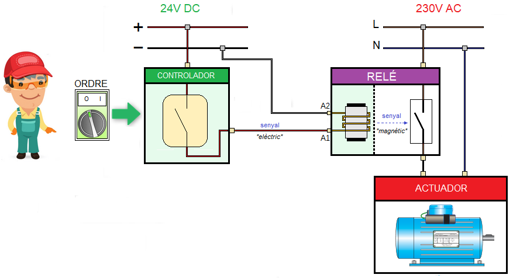

El circuit de la figura anterior està format per un interruptor rotatiu o selector que activa la bobina del relé i per un contacte NO del relé que fa la commutació d'un motor monofàsic de xicoteta potència. Aquest circuit tan senzill compleix amb alguns dels requisits que ha de tenir qualsevol automatisme:
- Incorporar dispositius per donar les ordres IN "("en tensió") i OFF ("sense tensió"). En aquest cas utilitzen un Interruptor Rotatiu per a les dues funcions.
- Disposar d'un circuit de control (el que activa la bobina del relé) i d'un circuit de potència (el que commuta el motor) independents. D'aquesta manera l'operador pot treballar amb una tensió diferent a la de funcionament del motor. Generalment el que es fa es utilitzar una tensió de seguretat en el circuit de control, per exemple 24V DC, reduint dràsticament el risc elèctric que té l'operador.
- Incorpora un preactuador (relé industrial). És el dispositiu encarregat de fer la commutació del motor a partir de les ordres que rep del circuit de control: IN ("en tensió") i OFF ("sense tensió").